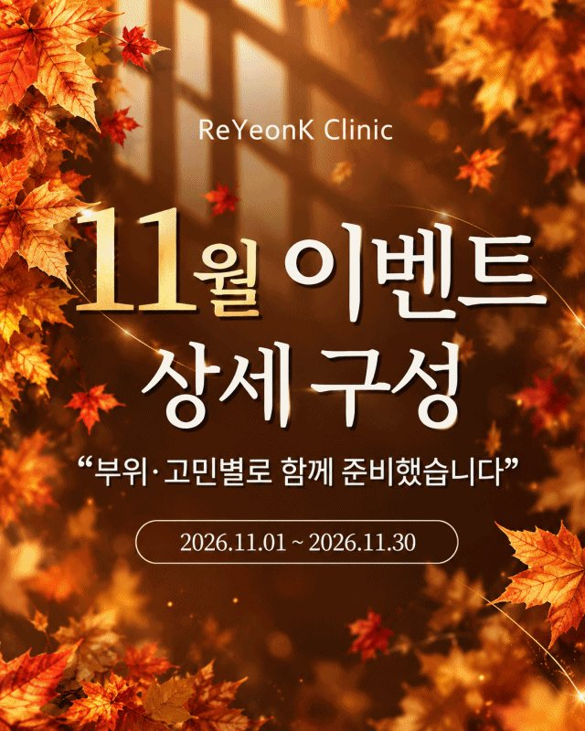

눈가 리프팅을 알아보는데, 어떤 시술을 어떻게 조합해야 하는지 막막하셨나요?
눈가는 얼굴에서 피부가 가장 얇고 바로 아래에 안구가 있는 부위입니다. 그래서 얼굴 리프팅과 같은 기준으로 접근하지 않고, 층마다 다른 시술을 눈가에 맞게 조합합니다. 이 글에서는 그 조합인 아이쎄라가 어떤 원리로 구성되는지, 어떤 눈가에 어떤 구성이 맞는지, 회복과 효과 시기는 어떤지 순서대로 정리했습니다.
글쓴이 : 리연케이의원 이두찬 원장

- 얼굴 울쎄라는 관자놀이부터 턱밑까지이고, 눈가·눈꺼풀·눈썹은 눈가 기준으로 따로 시술합니다.
- 아이쎄라는 표면(아이톡스), 진피(버츄아이), 깊은 층(아이울쎄라피 프라임)을 나누어 함께 진행하는 복합시술입니다.
- 처짐이 고민인지 잔주름이 고민인지에 따라 구성이 달라지고, 최종 구성은 상담에서 정합니다.
눈가는 왜 따로 시술할까요?
울쎄라를 받았는데 "눈가는 안 했다"는 말을 듣고 당황하는 분이 있습니다. 얼굴 울쎄라의 시술 범위는 관자놀이부터 턱밑까지이고, 눈가와 눈꺼풀, 눈썹 주변은 아이울쎄라로 따로 봅니다.
눈가 피부는 얼굴에서 가장 얇고, 그 아래가 곧 안구입니다. 얼굴에 쓰는 깊이와 에너지를 그대로 적용할 수 없어서, 눈가 기준으로 깊이와 강도를 다시 설정하고 안구를 보호하는 조치를 한 뒤에 진행합니다. 써마지에 눈가용 아이팁이 있고 덴서티에도 아이 팁이 따로 있는 것도 같은 이유입니다.
세 가지 시술을 층별로 나누는 이유
눈가의 변화는 한 층에서만 일어나지 않습니다. 눈이 무거워 보이는 것과 잔주름이 느는 것은 원인이 있는 층이 다릅니다. 아이쎄라는 층마다 작용하는 시술을 하나씩 맡겨 함께 진행하는 프로그램입니다.
- 표면
아이톡스
얕은 층에 주입해 잔주름과 피부결을 다룹니다.
- 진피
버츄아이
고주파(RF) 마이크로니들로 탄력 저하와 주름을 다룹니다.
- 깊은 층
아이울쎄라피 프라임
초음파(HIFU) 에너지로 눈꺼풀과 눈썹 주변, 눈꼬리의 처진 조직을 다룹니다.

내 눈가에는 어떤 구성이 맞을까요?
같은 눈처짐이라도 피부 두께, 눈가 구조, 눈썹과 눈꺼풀의 위치, 지방과 연부조직의 변화, 탄력 저하와 주름의 정도가 사람마다 다릅니다. 그래서 고민에 따라 구성을 달리합니다.
-
눈꺼풀이 내려앉거나 눈꼬리가 처진 경우
깊은 층의 처짐이 중심이라 아이울쎄라가 중심이 됩니다.
-
잔주름이 주된 고민인 경우
아이울쎄라는 맞는 선택이 아닙니다. 아이톡스와 버츄아이처럼 얕은 층에 작용하는 시술로 나누어 봅니다.
-
윗눈꺼풀이 꺼져 있는 경우
아이울쎄라 대신 아이써마지(고주파)를 넣고, 소량의 필러를 함께 고려하기도 합니다.
-
이마나 눈꼬리까지 처진 경우
실리프팅을 더해 함께 개선하는 방법도 있습니다.
샷 수를 늘리는 것이 목적은 아닙니다. 어느 층에 어떤 깊이와 강도로 적용할지가 핵심입니다.
시술 과정과 회복
마취크림을 충분히 바른 뒤 진행합니다. 눈가는 예민한 부위라 얼굴보다 자극을 더 느끼는 분이 있고, 견디기 어려운 강도라면 그대로 밀고 가지 않고 강도와 순서를 다시 조정합니다.
다운타임은 보통 하루 정도입니다. 시술 직후 눈가에 붉어짐과 약간의 붓기가 있을 수 있고, 다음 날부터 화장이 가능한 경우가 많습니다. 얼굴 울쎄라와 같은 날 함께 진행해도 무방합니다.
효과는 언제부터, 얼마나 가나요?
-
아이톡스
2~7일 안에 잔주름 변화가 먼저 나타납니다. 유지 기간은 3~4개월로 짧은 편이라, 이 시술만 중간에 다시 받는 분도 있습니다.
-
아이울쎄라
콜라겐이 차오르면서 4~12주에 걸쳐 서서히 나타납니다. 시술 직후 확 달라지는 시술은 아닙니다.
-
전체 유지 기간
대체로 6~12개월이며, 개인의 피부 상태에 따라 다를 수 있습니다.
기본 구성은 보통 아이울쎄라 200샷, 버츄아이 300샷, 아이톡스입니다. 빠르게 보이는 변화와 천천히 오는 변화가 함께 있는 구성입니다.
구성은 상담에서 정합니다
리연케이의원은 1:1 전담의 제도를 운영합니다. 담당 의사가 눈가 상태를 직접 확인하고 샷 수와 시술 방법을 정하며, 상담부터 시술까지 같은 의사가 진행합니다.

아이쎄라 가격과 11월 이벤트
| 시술 | 가격 |
|---|---|
| 아이울쎄라 100샷 | 40만원대 |
| 버츄아이 | 20~30만원대 |
“아이쎄라” 아이울쎄라 200샷 + 버츄아이 + 아이톡스
2026년 11월 1일부터 11월 30일까지 진행하는 이벤트 가격입니다.
자주 묻는 질문
-
아이쎄라는 정확히 무엇인가요?
아이울쎄라피 프라임, 버츄아이, 아이톡스를 층별로 나누어 함께 진행하는 눈가 복합 리프팅 프로그램입니다.
-
얼굴 울쎄라를 받으면 눈가도 함께 되나요?
얼굴 울쎄라의 범위는 관자놀이부터 턱밑까지입니다. 눈가·눈꺼풀·눈썹은 눈가 기준으로 따로 설정해 아이울쎄라로 진행합니다.
-
잔주름이 고민인데 아이울쎄라를 받으면 될까요?
아이울쎄라는 깊은 층의 처짐을 다루는 시술이라 잔주름만 고민이라면 맞지 않습니다. 잔주름은 아이톡스와 버츄아이로 나누어 봅니다.
-
효과는 얼마나 지속되나요?
대체로 6~12개월이며, 아이톡스는 3~4개월로 짧은 편입니다. 개인의 피부 상태에 따라 다를 수 있습니다.
-
시술 다음 날 화장이 가능한가요?
다운타임은 보통 하루 정도이며, 다음 날부터 화장이 가능한 경우가 많습니다. 붉어짐과 붓기에는 개인차가 있습니다.
눈가 리프팅은 어떤 장비를 쓰느냐보다, 어느 층에서 변화가 시작됐는지를 먼저 보는 일에서 시작합니다.
눈이 예전보다 무겁고 피곤해 보인다면, 처졌다고 단정하기 전에 리연케이의원에서 눈가 상태부터 확인해 보세요.

- 리연케이의원
- 서울특별시 강남구 언주로172길 64
지하 1층, 3층, 4층 - 전화
- 02-558-5581
- 웹사이트
- reyeonk.co.kr
※ 시술 효과와 유지 기간은 개인의 피부 상태에 따라 다를 수 있습니다. 시술 후 일시적인 붉어짐, 붓기, 멍, 통증 등이 나타날 수 있으므로 반드시 의료진과 충분히 상담하신 뒤 결정하시기 바랍니다.